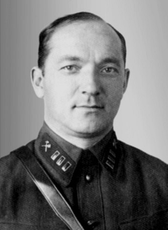
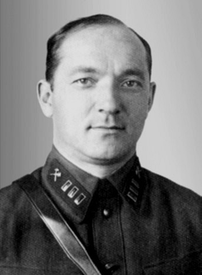

Лангемак Георгий Эрихович
- Дата рождения: 1989г.
- Место рождения: Харьковская обл., г. Старобельск
- Пол: мужчина
- Национальность: русский
- Образование: высшее
- Профессия / место работы: гл. инженер НИИ № 3 Наркомата оборонной промышленности СССР
- Место проживания: Москва, ул. Донская, д. 42, кв. 19
- Партийность: б/п
- Дата расстрела: 11 января 1938 г.
- Место захоронения: Московская обл., Коммунарка
- Мера пресечения: арестован
- Дата ареста: 2 ноября 1937 г.
- Обвинение: шпионаж в пользу Германии, «вредительство в области недопущения новых образцов на вооружение» и участие в «антисоветской террористической организации»
- Осуждение: 11 января 1938 г.
- Осудивший орган: ВКВС СССР
- Статья: 58-7, 58-8 и 58-11 УК РСФСР
- Приговор: ВМН
- Дата реабилитации: ноябрь 1955 г.
- Реабилитирующий орган: ВКВС СССР
- Источники данных: БД "Жертвы политического террора в СССР"; Москва, расстрельные списки - Коммунарка
Биография
Гео́ргий Э́рихович Лангема́к, 21 (8) июля 1898, Старобельск — 11 января 1938, Москва) — советский учёный, один из пионеров ракетной техники и один из основных создателей реактивного миномёта «Катюша», военинженер 1-го ранга. Герой Социалистического Труда (1991, посмертно).
Основоположник исследований по конструированию реактивных снарядов на бездымном порохе, открыл так называемый закон подобия, знание которого позволило определять оптимальную геометрию сопла реактивного двигателя без длительных дорогостоящих экспериментов — аналитическим расчётом. Перевёл на русский язык термин «космонавтика».
По ложному обвинению во «вредительстве» и участию в «антисоветской террористической организации» был арестован НКВД и расстрелян. После смерти Сталина посмертно реабилитирован.
Георгий Лангемак родился в г. Старобельске Харьковской губернии Российской империи, в августе 1908 года поступил в восьмиклассную Елисаветградскую гимназию, которую окончил с серебряной медалью при отличном поведении 29 апреля 1916 года. Решив посвятить свою жизнь изучению японской филологии, Георгий Лангемак в том же 1916 году поступил на филологический факультет Петроградского университета.
В 1923 году Георгий Лангемак поступил в Военно-техническую академию РККА (г. Ленинград) и в 1928-м окончил её. Во время учёбы вместе с другими слушателями академии под руководством преподавателя академии С. А. Серикова выполнял заказы Лаборатории Н. И. Тихомирова (с 1928 Газодинамическая лаборатория).
По окончании академии Георгий Лангемак был распределён на должность начальника артиллерии Черноморского флота, но по просьбе Н. И. Тихомирова к Командующему Ленинградским военным округом А. И. Корку он был оставлен для работы в Газодинамической лаборатории и приступил к работе 15 апреля 1928 года.
В Газодинамической лаборатории Георгий Лангемак занимался разработкой реактивных снарядов РС-82 мм и РС-132 мм. После смерти в 1930 году Н. И. Тихомирова начальником Газодинамической лаборатории был назначен Б. С. Петропавловский, а Г. Э. Лангемак — начальником 1-го сектора пороховых ракет, для продолжения работ, начатых Н. И. Тихомировым.
В 1933 году в СССР в области ракетной техники работало несколько научных коллективов. Интересы дела требовали создания единой научно-исследовательской базы. Предложения специалистов были услышаны и поддержаны начальником вооружений Красной Армии М. Н. Тухачевским. В результате в конце 1933 года в Москве на базе Газодинамической лаборатории и МосГИРД в системе Наркомвоенмора был создан первый в мире Реактивный научно-исследовательский институт (РНИИ) также известный как НИИ-3. Директором института был назначен начальник Газодинамической лаборатории И. Т. Клеймёнов, его заместителем — начальник ГИРД С. П. Королёв, которого в апреле 1934 года сменил на этом посту Г. Э. Лангемак.
21 сентября 1933 после создания Реактивного научно-исследовательского института на основе Газодинамической лаборатории и МосГИРД, Г. Э. Лангемак назначается начальником Ленинградского отделения РНИИ. После переезда в Москву в январе 1934, Г. Э. Лангемак назначается на должность заместителя директора по научной части (главного инженера) Реактивного НИИ НКТП (с 1937 НИИ № 3 НКОП). Он занимал эту должность до ноября 1937 года. В сентябре 1935 ему присвоено персональное воинское звание «военинженер 1-го ранга».
За время работы в институте Георгий Лангемак практически завершил доводку реактивных снарядов РС-82 мм и РС-132 мм, впоследствии ставших основой реактивного миномёта «Катюша». В 1933 году в Газодинамической лаборатории были проведены официальные полигонные испытания с земли, морских судов и самолётов 9 видов ракетных снарядов различных калибров на бездымном порохе конструкции Б. С. Петропавловского, Г. Э. Лангемака и В. А. Артемьева.
Вместе с Б. С. Петропавловским, В. А. Артемьевым, Н. И. Тихомировым и Ю. А. Победоносцевым, Георгий Эрихович Лангемак по праву считается одним из основных создателей реактивного миномёта «Катюша».
В этот период Г. Э. Лангемак вёл переписку с К. Э. Циолковским, размышляя и о невоенном применении ракет, о возможности их использования в космонавтике. Сам русский термин «космонавтика» ввёл именно Г. Э. Лангемак.
В 1937 году Лангемака и директора НИИ № 3 НКОП И. Т. Клеймёнова представляли к правительственным наградам за разработку новых типов вооружения. В 1937 приказом по институту он был премирован за успешные испытания реактивных снарядов.
В 1937 г. как «детище» Тухачевского Реактивный научно-исследовательский институт подвергся «чистке». Руководство института было арестовано. 2 ноября 1937 года Г. Э. Лангемак был арестован (ордер № А 810) органами НКВД г. Москвы, как немецкий шпион, на основании данных, имевшихся ранее в НКВД (следственное дело архива ФСБ № Р3284 (14654)). Обвинительное заключение, датированное 31 декабря 1937 года, основано на единственном протоколе допроса, второй экземпляр которого датирован 15 декабря 1937 года (первый экземпляр даты не имеет), составленный на основе материалов, предоставленных из института, при активном участии А. Г. Костикова, занявшего место Лангемака после его ареста.
Лангемак был подписан к репрессии по «первой категории» (расстрел) в списке «Москва-центр» от 3 января 1938 года на 163 чел., № 73, по представлению начальника 8-го отдела ГУГБ НКВД В. Е. Цесарского. Подписи: «за» Жданов, Молотов, Каганович, Ворошилов.
11 января 1938 на закрытом судебном заседании выездной сессии Военной Коллегии Верховного Суда СССР под председательством армвоенюриста В. В. Ульриха и двумя членами: диввоенюристом И. Т. Голяковым и военюристом 1-го ранга А. Г. Суслиным было рассмотрено дело Георгия Эриховича Лангемака.
За «вредительство в области недопущения новых образцов на вооружение» и участие в «антисоветской террористической организации», преступлениях предусмотренных ст. ст. 58-7, 58-8 и 58-11 УК РСФСР Георгий Эрихович Лангемак был приговорён к расстрелу с конфискацией всего лично ему принадлежащего имущества. В тот же день приговор был приведён в исполнение. Георгий Лангемак был расстрелян 28-м по списку (письмо В. В. Ульриха на имя коменданта ГУГБ НКВД В. М. Блохина № 00514/1 от 11 января 1938 года и акт коменданта от 11 января 1938 года).
 

Катюша
«Катю́ша» (в советской литературе часто встречается и написание со строчной буквы) — появившееся во время Великой Отечественной войны 1941—1945 годов неофициальное название бесствольных систем полевой реактивной артиллерии (в первую очередь и первоначально — БМ-13, а впоследствии также БМ-8, М-31 и других). Такие установки активно использовались РККА во время Великой Отечественной войны. Популярность прозвища оказалась столь большой, что «Катюшами» в разговорной речи стали нередко именовать и послевоенные РСЗО на автомобильных шасси, в частности БМ-14 и БМ-21 «Град». Впоследствии, по аналогии с «Катюшей», прозвище «Андрюша» было дано советскими бойцами и другой установке реактивной артиллерии БМ-31-12, но это прозвище не получило столь широкого распространения и популярности.